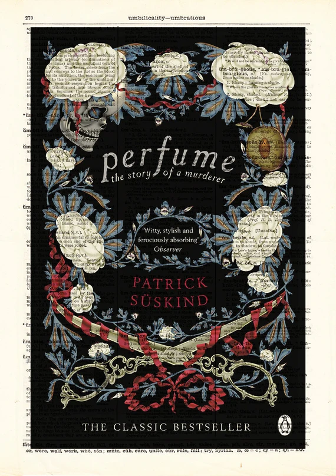

Recomendaciones de Libros
-
Orgullo y Prejuicio - Jane Austen

Orgullo y Prejuicio de Jane Austen es un clásico atemporal que explora temas de amor, clase y crecimiento personal. La ingeniosa e independiente Elizabeth Bennet choca con el orgulloso Sr. Darcy, pero a medida que aprenden más el uno del otro, sus juicios iniciales se ven desafiados. Es una lectura obligada para quienes disfrutan de una aguda crítica social envuelta en una historia romántica.
-
Perfume - Patrick Süskind
El Perfume de Patrick Süskind es una historia oscura y fascinante ambientada en la Francia del siglo XVIII. Sigue la vida de Jean-Baptiste Grenouille, un hombre con un sentido del olfato extraordinario pero sin olor propio. Obsesionado con crear la fragancia perfecta, recurre al asesinato. Este thriller psicológico explora temas de obsesión, identidad y el poder del olfato de una manera inquietante e inolvidable.
-
La insoportable levedad del ser - Milan Kundera

La insoportable levedad del ser de Milan Kundera es una novela filosófica que ahonda en el amor, la política y la condición humana. Ambientada en la Checoslovaquia ocupada por los soviéticos, la historia transita las vidas de Tomas, Tereza, Sabina y Franz mientras luchan con la libertad personal, el compromiso y el peso de sus decisiones. Una profunda reflexión sobre la existencia que combina romance, existencialismo e historia en una narrativa que invita a la reflexión.
-
Norwegian Wood - Haruki Murakami

"Norwegian Wood" de Haruki Murakami es una conmovedora novela de formación que explora el amor y la pérdida en el Tokio de los años 60. La historia sigue a Toru Watanabe mientras navega por sus sentimientos hacia dos mujeres muy diferentes, lo que lleva a profundas reflexiones sobre la memoria y el impacto de la tragedia en la juventud.
-
Los siete maridos de Evelyn Hugo - Taylor Jenkins Reid

"Los siete maridos de Evelyn Hugo" de Taylor Jenkins Reid es una cautivadora historia sobre la vida glamurosa y escandalosa de la icono de Hollywood Evelyn Hugo. A través de una serie de entrevistas, Evelyn cuenta sus siete matrimonios y las complejidades del amor, la fama y la identidad. Esta novela ofrece una rica exploración sobre lo que significa ser una mujer en el ojo público.
Para más recomendaciones, haz clic aquí.